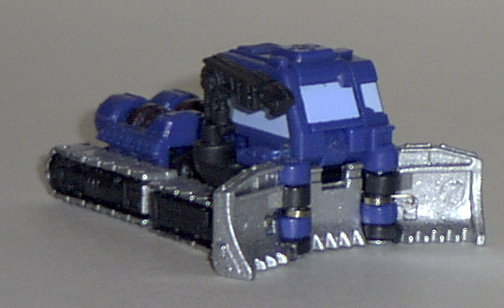
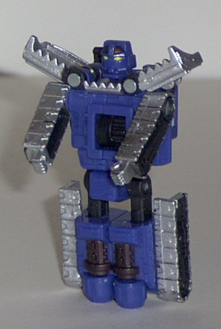
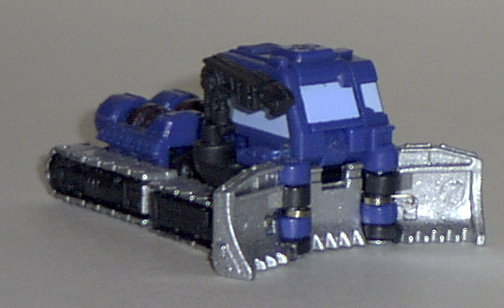
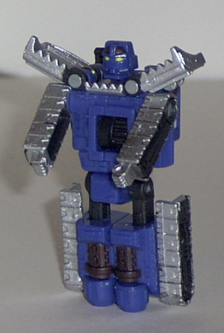
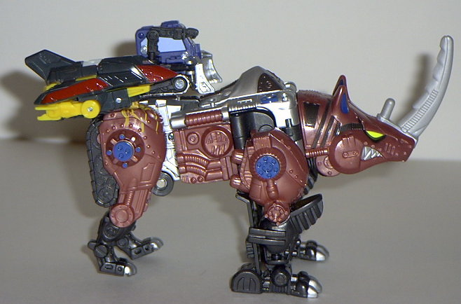
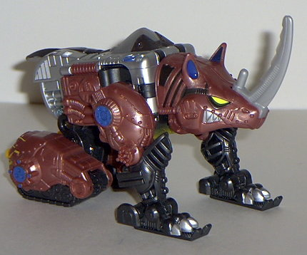
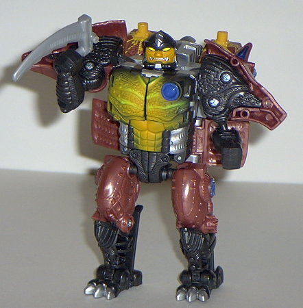

Armorhide
Armorhide
 
Allegiance : Minicon
Size : Mini-Con
Difficulty of Transformation : Very Easy
Color Scheme : Silver, black, dark blue, and some icy blue and pale yellow
Rating : 6.4
Armorhide


Allegiance
: Minicon
Size
: Mini-Con
Difficulty of Transformation
: Very
Easy
Color Scheme
: Silver, black, dark
blue, and some icy blue and pale yellow
Rating
: 6.4
(NOTE: Because this is a repaint, this is not a full-blown review. This mainly covers any changes made to the mold and the color scheme, and merely compares it to Iceberg. For a review on the mold itself, read the review of Iceberg here .)
Armorhide has a really,
really cool color scheme- and it fits very well with his arctic tracker
alt-mode. The icy and dark blue, black, and silver go together incredibly
well to create a "polar" feel to this Transformer- which is, of course,
appropriate. He also has a bit more paint detailing than his predecessor
Iceberg- there's significantly more paint on his treads and front clamps
this time around. In fact, I wouldn't change a thing- Armorhide's color
scheme is, quite literally, perfect.
This is about as good
as you can expect this mold to get, folks. Excellent color scheme, so-so
mold.
 Rhinox
Rhinox



Allegiance
: Autobot
Size
: Super-Con
Difficulty of Transformation
: Hard
Color Scheme
: Rusty reddish-brown,
silver, very dark brown, yellow, and some light gray, "cheese" yellow,
dark glossy blue, pale yellow, and greenish yellow
Powerlinx ports
: 2 (0 gimmicked)
Rating
: 9.4
(NOTE: Because this is a repaint, this is not a full-blown review. This mainly covers any changes made to the mold and the color scheme, and merely compares it to Rhinox Transmetal. For a review on the mold itself, read the review of Rhinox Transmetal here .)
Man, as if this mold
wasn't cool enough as is. Now the color scheme is improved even more over
Rhinox's original Transmetal form- the rusty color, silver, brown, and
blue highlights work absolutely magnificently together. Definitely the
best color scheme out of the three versions of this mold, and considering
the original Transmetal version, that's saying a lot. Like the other Armada
beasts, Rhinox has had his chrome bits replaced with regular plastic- although
in this case, the regular plastic is completely painted over with spiffy
silver paint. Don't worry, though- it doesn't have any wearing problems
at all, at least from what I've seen. So although it doesn't look
quite
as good as the chrome stuff, it doesn't chip, which is a big plus. Also,
he has two Powerlinx ports molded onto the top of his rear legs. The "surge"
patterns painted around them looks really cool, but they are in a bit of
an odd area- most Minicons look pretty weird connected there. I prefer
to just keep the Minicons off and let the surge patterns shine, since they
don't really activate any gimmicks anyways.
Again, this version
of Rhinox is about as good as you can expect this mold to get- which is
REALLY good, in case you couldn't tell by the rating. Highly recommended,
especially if you don't have any version of this spectacular mold yet.
No Stats
Review by Beastbot